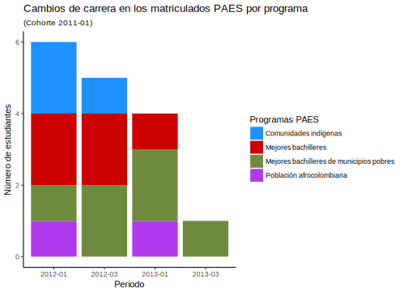
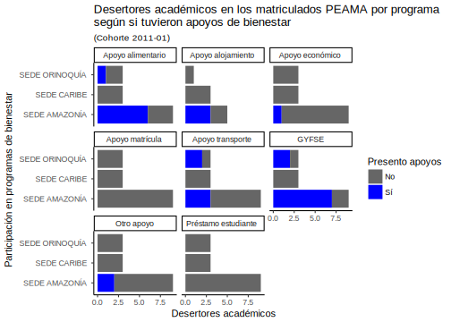
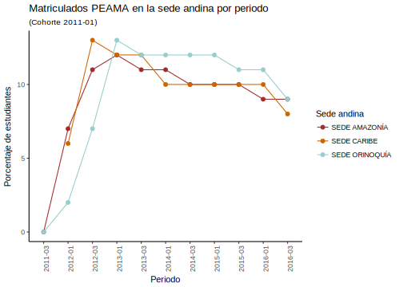
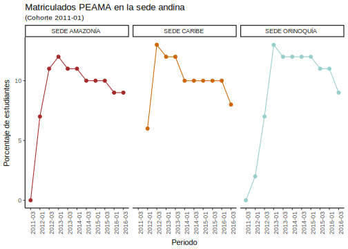
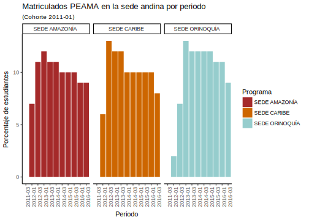

Impacto de los programas PAES y PEAMA
1
Introducción
1.1
Evaluación de impacto
2
Objetivos
2.1
Objetivo general
2.2
Objetivos específicos
2.3
Ignorar por ahora
3
Marco conceptual
3.1
Análisis de correspondencias múltiples
3.2
Modelos multinomiales
3.3
Modelos multinomiales logísticos multinivel
3.4
Software estadístico R:
3.4.1
Librería tidyverse:
3.4.2
Librería Factoclass:
3.4.3
Librería lme4:
3.4.4
Librería MCMCglmm:
4
Metodología
5
Admisión PAES
5.1
Sexo de los admitidos
5.2
Edad de los admitidos
5.3
Sede andina de los admitidos
5.4
Sede andina y programa de los admitidos
5.5
Sede andina y facultad de los admitidos
5.6
Estrato socioeconómico de los admitidos
5.6.1
Estrato agrupado:
5.6.2
Estrato original:
5.7
Puntaje en examen de admisión
5.8
Porcentaje de admitidos v.s. total de aspirantes
5.9
Admitidos PAES por município de residencia
5.9.1
Todos los admitidos PAES
5.9.2
Admitidos PAES de las comunidades indígenas
5.9.3
Admitidos PAES de los mejores bachilleres
5.9.4
Admitidos PAES de los mejores bachilleres de municipios pobres
5.9.5
Admitidos PAES de las poblaciones afrocolombianas
5.10
Admitidos PAES por departamento de residencia
5.10.1
Todos los admitidos PAES
5.10.2
Admitidos PAES de las comunidades indígenas
5.10.3
Admitidos PAES de los mejores bachilleres
5.10.4
Admitidos PAES de los mejores bachilleres de municipios pobres
5.10.5
Admitidos PAES de las poblaciones afrocolombianas
6
Admisión PEAMA
6.1
Sexo de los admitidos
6.2
Edad de los admitidos
6.3
Sede andina de admisión
6.4
Sedes andinas de admisión y sede de presencia nacional
6.5
Programa de admisión
6.6
Estrato de los admitidos
6.7
Puntaje total de admisión
6.8
Admitidos PEAMA por municipio
6.8.1
Todos los admitidos PEAMA
6.8.2
Admitidos PEAMA Amazonia
6.8.3
Admitidos PEAMA Caribe
6.8.4
Admitidos PEAMA Orinoquía
6.9
Admitidos PEAMA por departamento
6.9.1
Todos los admitidos PEAMA
6.9.2
Admitidos PEAMA Amazonia
6.9.3
Admitidos PEAMA Caribe
6.9.4
Admitidos PEAMA Orinoquía
7
Normatividad
7.1
Validación de la normatividad vigente y aplicable a los PAES
7.1.1
Puntaje en examen de admisión
7.2
Razón de admitidos PAES por programa vs. la cantidad de cupos ofertados por el programa curricular
7.3
Validación de la normatividad vigente y aplicable a los PEAMA
7.3.1
Puntaje total de admisión
7.3.2
Departamento de residencia de los admitidos
7.3.3
Cupos por programa
8
Impácto de los programas especiales de admisión PAES y PEAMA
8.1
Porcentajes de admisión
8.2
Ubicación de los admitidos
8.2.1
Departamentos
8.2.2
Municipios
8.3
Desenlaces
9
Permanencia PAES
9.1
Máximo périodo de avance
9.2
Matriculados por semestre
9.3
Cancelaciones por semestre
9.4
Deserciones por semestre
9.5
Deserciones académicas por semestre
9.6
Deserciones no académicas por semestre
9.7
Promedio por semestre
9.8
PAPA por semestre
9.9
Traslados de carrera
9.10
Traslados de sede
9.11
Graduados
10
Permanencia PEAMA
10.1
Máximo periodo de avance 2
10.1.1
SPN:
10.2
SA:
10.3
Matriculados por semestre
10.3.1
SPN:
10.4
SA:
10.5
Cancelaciones por semestre
10.5.1
SPN:
10.6
SA:
10.7
Promedio por semestre
10.7.1
SPN:
10.8
SA:
10.9
PAPA por semestre
10.9.1
SPN:
10.10
SA:
10.11
Deserciones por semestre
10.12
Deserciones académicas por semestre
10.13
Deserciones no académicas por semestre
10.14
Traslados de carrera
10.15
Traslados de sede
10.16
Graduados
11
Bienestar PAES
11.1
12
Bienestar PEAMA
12.1
12.1.1
SPN:
12.2
SA:
Referencias
Dirección Nacional de Bienestar Universitario
Impacto programas PAES y PEAMA
10.4
SA:
